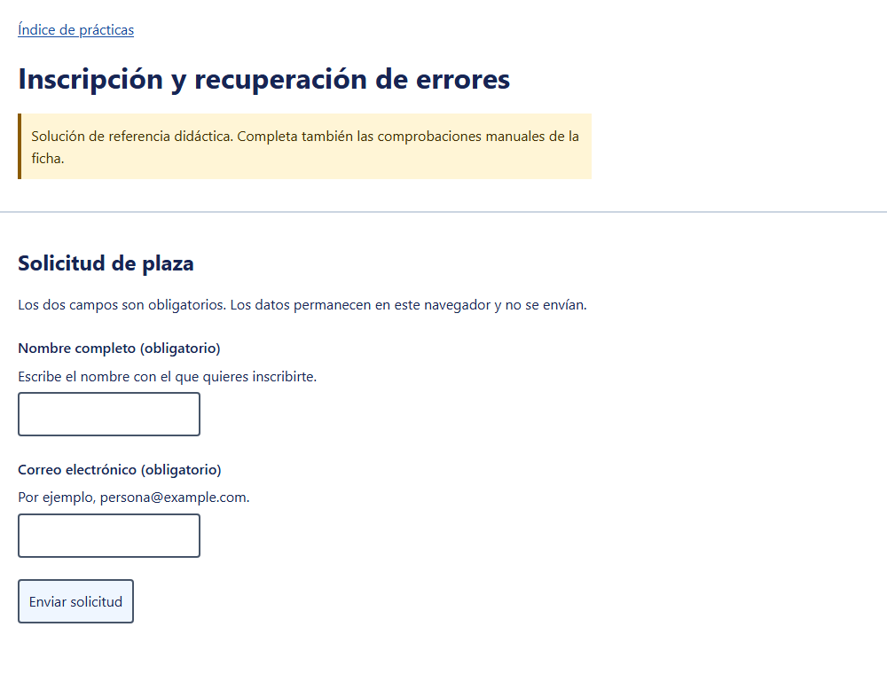
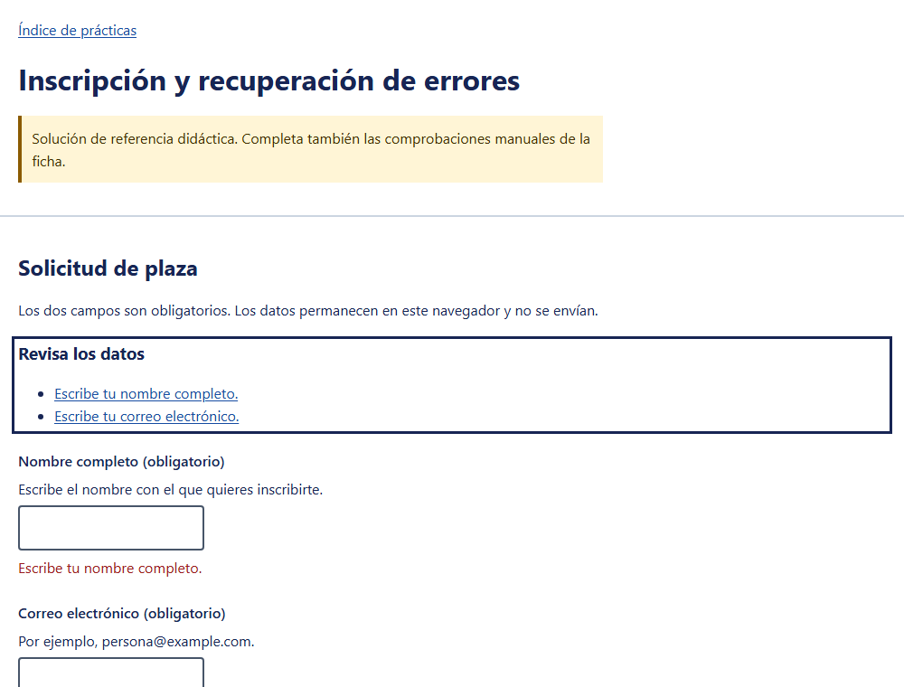
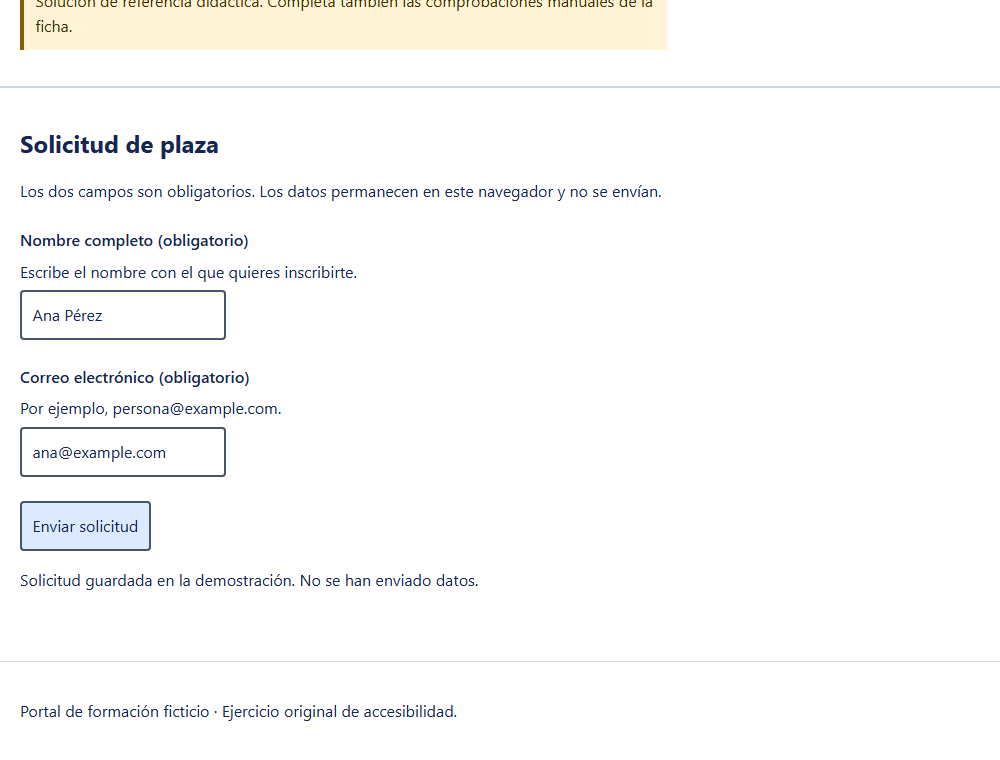

Resumen
La solución no presenta fallos detectables en las pruebas automáticas ni en las manuales que he podido automatizar. Hay 6 mejoras que la harían más robusta y fácil de usar; ninguna es un fallo de nivel A o AA.
- axe-core (reglas WCAG 2.x y buenas prácticas): 0 violaciones y 0 resultados incompletos, tanto en el estado inicial como con errores.
- Teclado: el orden de Tab es lógico y no hay trampas de foco.
- Errores: el foco va al resumen, los enlaces llevan al campo y los datos se conservan.
- Reflow a 320 px, espaciado de texto y texto al 200 %: sin pérdida de contenido.
Método
- Abrí la página con Playwright en Chromium (1000×760 px) y tomé una captura del estado inicial.
- Pasé axe-core completo (no solo las etiquetas WCAG) para incluir buenas prácticas.
- Extraje el árbol de accesibilidad para ver cómo lo interpreta un lector de pantalla.
- Recorrí la página con Tab y medí etiquetas, atributos, tamaños y contrastes.
- Envié el formulario vacío, con el correo mal formado, con un correo de sintaxis dudosa y con datos correctos.
- Probé reflow a 320 px, espaciado de texto aumentado, texto al 200 % y modo de colores forzados.



Lo que he averiguado
| Comprobación | Resultado medido | Criterio | Estado |
|---|---|---|---|
| Etiquetas | Ambos campos tienen label asociado: «Nombre completo (obligatorio)» y «Correo electrónico (obligatorio)». El nombre accesible coincide con el texto visible. |
1.3.1, 3.3.2, 2.5.3, 4.1.2 | Cumple |
| Propósito de los campos | autocomplete="name" y autocomplete="email"; el correo usa type="email". |
1.3.5 (AA) | Cumple |
| Instrucciones y ayudas | Texto previo («los dos campos son obligatorios, los datos no se envían») y una ayuda por campo enlazada con aria-describedby. |
3.3.2 | Cumple |
| Identificación de errores | Envío vacío: 2 campos con aria-invalid; aria-describedby pasa a «nombre-ayuda nombre-error» (se conserva la ayuda). Los textos son específicos. |
3.3.1, 3.3.3 (AA) | Cumple |
| Gestión del foco en errores | Tras un envío con errores el foco va a #resumen; al pulsar un enlace del resumen el foco pasa al campo. |
2.4.3, 3.3.1 | Cumple |
| Mensajes de estado | El éxito se escribe en un role="status" que ya existe en el DOM desde la carga; el foco permanece en el botón. |
4.1.3 (AA) | Cumple |
| Conservación de datos | Con el correo inválido, el nombre «Ana Pérez» se mantuvo y solo quedó un error en el resumen. | 3.3.7 | Cumple |
| Orden de teclado | Tab recorre: enlace «Índice de prácticas» → nombre → correo → botón, y sale del documento. Enter dentro de un campo envía el formulario. | 2.1.1, 2.1.2, 2.4.3 | Cumple |
| Contraste | Etiquetas y ayudas: 14,69:1. Mensajes de error (#9b1c1c): 8,15:1. Contorno de foco de 3 px (#172554) sobre blanco. | 1.4.3, 1.4.11, 2.4.7 | Cumple |
| Tamaño de los objetivos | Campos de 206×50 px y botón de 131×50 px, por encima de 24×24 px. | 2.5.8 (AA) | Cumple |
| Reflow, texto y espaciado | A 320 px: ancho de scroll 320, igual al del cliente. Texto al 200 %: sin desbordamiento. Espaciado 1.4.12: 0 elementos recortados. | 1.4.4, 1.4.10, 1.4.12 | Cumple |
| Colores forzados | Con forced-colors: active el resumen de errores sigue visible. |
1.4.11, 1.4.1 | Cumple (revisión visual pendiente) |
Árbol de accesibilidad tras el envío vacío
- region "Revisa los datos":
- heading "Revisa los datos" [level=3]
- list: link "Escribe tu nombre completo." / link "Escribe tu correo electrónico."
- textbox "Nombre completo (obligatorio)" [invalid]
- paragraph: Escribe tu nombre completo.
- textbox "Correo electrónico (obligatorio)" [invalid]
- paragraph: Escribe tu correo electrónico.
- button "Enviar solicitud"
- statusEl resumen se expone como región con nombre, los campos aparecen como inválidos y el mensaje de estado existe aunque esté vacío, que es lo que permite anunciarlo después.
Puntos débiles detectados (no son fallos A/AA)
- El campo inválido conserva el mismo borde (2 px, rgb(71, 85, 105)) que el válido. El error solo se distingue por el texto, que se ve y se lee bien, pero no hay pista visual en el propio campo.
- El correo
a@bse acepta como válido porque la validación nativa del tipoemailadmite dominios sin punto. - Los enlaces del resumen repiten el mensaje, pero no nombran el campo («Escribe tu nombre completo.»).
- El título de la página no cambia cuando hay errores.
- El
<form>no tiene nombre accesible y el botón no declaratype="submit". - No hay enlace para saltar al contenido. En una página tan corta no incumple 2.4.1 porque existe el landmark
main, pero es útil si crece.
Lo que la prueba no demuestra
Un resultado limpio de axe no equivale a que el formulario sea accesible. Ya vimos en la versión inicial de esta práctica que axe daba 0 violaciones con barreras reales.
- No se ha probado con NVDA, JAWS ni VoiceOver. No puedo afirmar cómo se anuncia el resumen, el error ni el estado.
- No se ha probado con voz (Dragon) ni con zoom del sistema en dispositivos reales.
- La revisión visual de colores forzados se ha comprobado por código, no con una persona.
- Esto no es una declaración de conformidad con WCAG 2.2.
Propuestas de mejora
Ordenadas por beneficio y esfuerzo. Son propuestas: no he modificado la solución de referencia.
1. Marcar visualmente el campo con error
Criterios: 1.4.1 Uso del color, 1.4.11 Contraste no textual, 3.3.1. Prioridad: alta.
Hoy el borde del campo no cambia. Se propone usar el propio atributo
aria-invalid como gancho de estilo y no depender solo del color, con un
borde más grueso y un prefijo textual.
input[aria-invalid='true'] {
border-color: #9b1c1c;
border-width: 3px;
}
.error::before {
content: 'Error: ';
font-weight: 700;
}Con el prefijo, el lector que lea el mensaje por separado también oirá que es un error. El texto generado por CSS no siempre se anuncia de forma fiable, así que la alternativa más robusta es escribir «Error:» directamente en el texto del mensaje.
2. Nombrar el campo en los enlaces del resumen
Criterios: 2.4.4 Propósito de los enlaces, 3.3.1. Prioridad: alta.
Quien navega por la lista de enlaces oye «Escribe tu nombre completo.» sin saber a qué campo lleva. Se propone un texto que empiece por el nombre del campo.
link.textContent = `${labelOf(id)}: ${message}`;
// «Nombre completo: Escribe tu nombre completo.»3. Cambiar el título de la página cuando hay errores
Criterios: 2.4.2 Titulado de páginas, 3.3.1. Prioridad: media.
document.title = issues.length
? `(${issues.length} errores) ${baseTitle}`
: baseTitle;Es útil para quien vuelve a la pestaña o navega con lector. Debe restaurarse al corregir.
4. Endurecer la validación del correo
Criterios: 3.3.1, 3.3.3 Sugerencias para corregir. Prioridad: media.
a@b se acepta. Si el dominio debe tener punto, se puede comprobar con un
patrón sencillo y mantener el mensaje específico. No conviene una expresión regular
demasiado estricta, porque rechazaría direcciones válidas.
const dominioConPunto = /@[^@\s]+\.[^@\s]+$/;
if (!dominioConPunto.test(input.value)) message = messages.email.format;5. Dar nombre al formulario y declarar el tipo del botón
Criterios: 1.3.1, 4.1.2. Prioridad: baja.
<h2 id="titulo-form">Solicitud de plaza</h2>
<form id="inscripcion" aria-labelledby="titulo-form" novalidate>
...
<button type="submit">Enviar solicitud</button>Con nombre, el formulario pasa a ser un landmark en lectores de pantalla y se puede saltar a él directamente.
6. Añadir un enlace «Saltar al contenido»
Criterios: 2.4.1 Evitar bloques. Prioridad: baja.
base.css ya define la clase .skip. Basta con añadirlo como
primer elemento del body, apuntando a #contenido, que ya
existe en main.
<a class="skip" href="#contenido">Saltar al contenido</a>Mejora adicional a valorar
- Mantener el foco tras el éxito: hoy permanece en el botón, que es correcto. Si el diseño evolucionara a un segundo paso, habría que mover el foco al título del nuevo paso y reutilizar el correo ya introducido (3.3.7).
- Autenticación: si más adelante se añade acceso con contraseña, hay que permitir pegar y usar gestores de contraseñas (3.3.8).
Siguientes pasos
- Probar el flujo completo con NVDA y Firefox, y con VoiceOver y Safari; anotar qué se anuncia al enviar vacío y al corregir.
- Decidir qué mejoras aplicar (recomiendo las 1 y 2) y reflejarlas en una copia de la solución, nunca en la referencia del curso.
- Repetir esta misma batería de pruebas tras los cambios y comparar con este informe.
- Registrar el resultado en la plantilla de incidencia del curso.